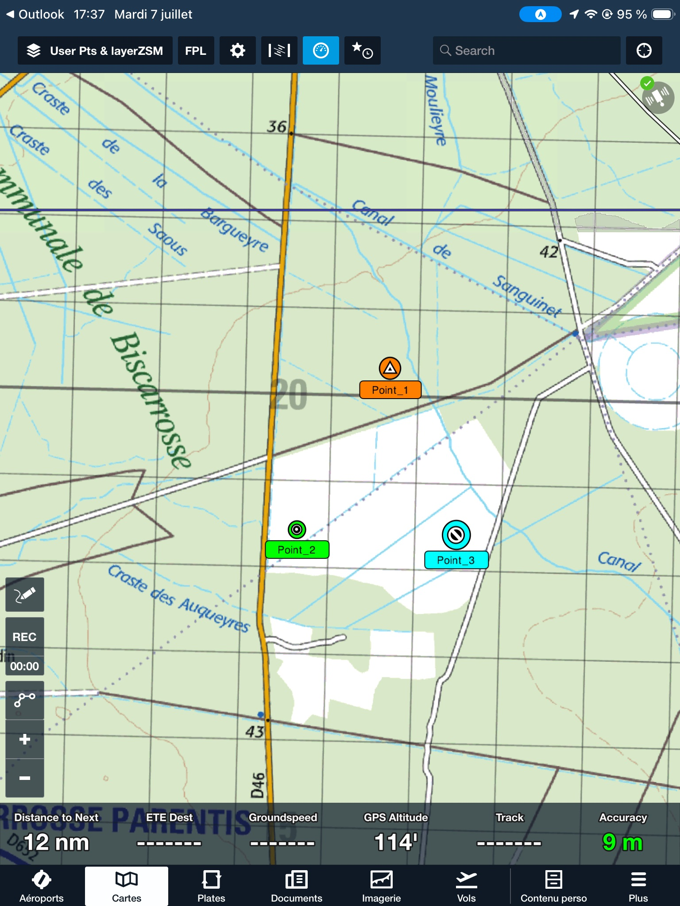
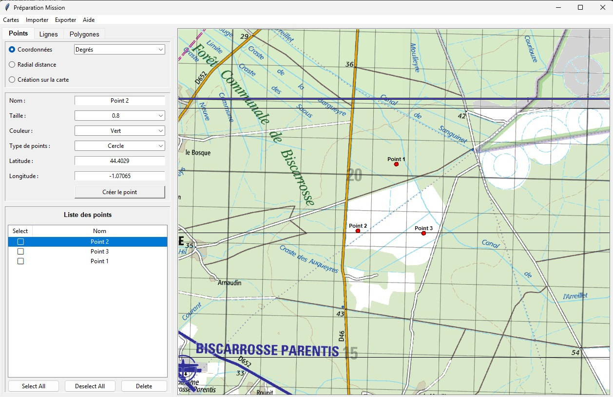

Onglet Points


Création de points
Le premier cadre permet de sélectionner le type de création de point :
- Coordonnées : création en entrant ses coordonnées (format dans le menu déroulant).
- Radial Distance : crée un point en radial distance par rapport à un point de référence (choisi dans le menu déroulant).
- Tracé sur la carte : crée un point en utilisant
MAJ + Clic Gauchedirectement sur la carte.
Personnalisation
Ce second cadre qui s'adapte en fonction du type de point permet la saisie des données de création:
- Nom : Nom du point.
- Taille : Taille du point (ForeFlight). Une valeur de 1 correspond à la taille par défaut dans ForeFlight. Une taille de 0,7 (70%) est recommandée pour l'export dans ForeFlight.
- Type de point : Forme du point (ForeFlight).
- Couleur : Couleur du point (ForeFlight).
- Latitude : Latitude du point.
- Longitude : Longitude du point.
- Créer le point : Crée le point avec les paramètres sélectionnés.
SDVFR ne tient pas compte des paramètres de personnalisation. Il est nécessaire de configurer les tailles, couleurs des lignes, points et polygones aprés l'export dans la tablette.
Liste des points
Le troisième cadre permet de lister l'ensemble des points créés :
- La case à cocher permet de sélectionner le point pour effacement ou export.
- Select All permet de sélectionner tous les points.
- Deselect All permet de désélectionner tous les points.
- Delete permet d'effacer les points sélectionnés.
- Cliquer sur le nom du point met à jour les champs avec ses paramètres dans la page coordonnées en degrés. Suite aux modifications, un appui sur le bouton Créer le point enregistre le point avec les changements.
- Double-cliquer sur le nom du point centre la carte sur le point.
Onglet Lignes


Création par sélection de points
4.1.1 : permet de créer une ligne en sélectionnant des points dans la liste des points créés.
- Sélectionner un point dans la boîte
Pointset ajouter à la ligne via le bouton>>. - Possibilité de retirer un point de la ligne via le bouton
<<. - Une fois les points transférés vers la boîte
Ligne, il est possible de les réordonner viaClick Gaucheet déplacement à la souris.
Création sur la carte
4.1.2 : permet de créer la ligne en la dessinant directement sur la carte.
SHIFT + CLIC GAUCHEpermet de créer un nouveau point sur la carte.SHIFT + CLIC DROITefface le dernier point ajouté.CLIC GAUCHEmaintenu sur la ligne permet de la translater sur la carte.SHIFT + CLIC GAUCHEsur un point existant permet de le sélectionner et de le déplacer.
Le champ Longueur totale affiche la longueur totale de la ligne en mètres ou nautiques.
Le champ Longueur segment affiche la longueur du dernier segment ajouté en mètres ou nautiques.
Le champ Gisement dernier segment affiche le gisement du dernier segment ajouté en degrés.
Paramètres après tracé
- Nom : permet de donner un nom à la ligne.
- Épaisseur de la ligne : permet de choisir l'épaisseur de la ligne (6 conseillé pour ForeFlight).
- Couleur : permet de choisir la couleur de la ligne.
- L'appui sur le bouton Créer la ligne crée la ligne avec les paramètres sélectionnés.
Gestion des lignes
- Select All permet de sélectionner toutes les lignes.
- Deselect All permet de désélectionner toutes les lignes.
- Delete permet d'effacer les lignes sélectionnées.
- Double-clic sur le nom de la ligne centre la carte sur la ligne.
- CLIC GAUCHE sur la case à cocher sélectionne la ligne pour effacement ou export.
Onglet Polygones


Création par sélection de points
5.1.1 : permet de créer un polygone en sélectionnant des points dans la liste des points créés.
- Sélectionner un point dans la boîte
Pointset ajouter au polygone via le bouton>>. - Possibilité de retirer un point du polygone via le bouton
<<. - Une fois les points transférés vers la boîte
Polygone, il est possible de les réordonner viaClick Gaucheet déplacement à la souris.
Création sur la carte
5.1.2 : permet de créer le polygone en le dessinant directement sur la carte.
SHIFT + CLIC GAUCHEpermet de créer un nouveau point sur la carte.SHIFT + CLIC DROITefface le dernier point ajouté.CLIC GAUCHEmaintenu sur la ligne permet de la translater sur la carte.SHIFT + CLIC GAUCHEsur un point existant permet de le sélectionner et de le déplacer.
Le champ Longueur segment affiche la longueur du dernier segment ajouté en mètres ou nautiques.
Le champ Gisement dernier segment affiche le gisement du dernier segment ajouté en degrés.
Création d'un rectangle
- Choisir dans la liste des points le centre du rectangle.
- Sélectionner une largeur et une longueur en mètres ou nautiques.
- Sélectionner une orientation en degrés.
- Ajouter une flèche indiquant graphiquement la direction du rectangle.
Création d'un cercle
- Choisir dans la liste des points le centre du cercle.
- Sélectionner un rayon en mètres ou nautiques.
- Sélectionner le nombre de segments pour tracer le cercle.
- La case à cocher Arc de cercle permet de créer un arc de cercle au lieu d'un cercle complet.
- Choisir l'angle de départ.
- Choisir l'angle d'arrivée.
- La case à cocher Relier au centre permet de tracer l'arc de cercle en reliant les extrémités au centre.
Paramètres après tracé
- Nom : permet de donner un nom au polygone.
- Épaisseur de la ligne : permet de choisir l'épaisseur de la ligne (6 conseillé pour ForeFlight).
- Couleur du contour : permet de choisir la couleur de la ligne.
- Couleur du remplissage : permet de choisir la couleur du remplissage.
- L'appui sur le bouton Créer le polygone crée le polygone avec les paramètres sélectionnés.
Gestion des polygones
- Select All permet de sélectionner tous les polygones.
- Deselect All permet de désélectionner tous les polygones.
- Delete permet d'effacer les polygones sélectionnés.
- Double-clic sur le nom du polygone centre la carte sur le polygone.
- CLIC GAUCHE sur la case à cocher sélectionne le polygone pour effacement ou export.
Import / Export
Importer fichier KML
Permet d'importer un fichier KML.
Importer fichier CSV
Permet d'importer un fichier CSV possédant les champs Name et Lat,Lon exprimés en degrés décimaux.
| Name | Lat | Lon |
|---|---|---|
| Point A | 44.123456 | -1.234567 |
| Point B | 43.987654 | -1.543210 |
Exporter vers SDVFR
Permet d'exporter les objets sélectionnés vers SDVFR, pas de prise en compte des champs taille, couleur et type de point.
Exporter vers ForeFlight
Permet d'exporter les objets sélectionnés vers ForeFlight avec prise en compte des champs taille, couleur et type de point.
Les fichiers KML permettent d'exporter des points, des lignes et des polygones.
Les fichiers CSV permettent d'exporter uniquement des points.
Export ForeFlight
Pour un export ForeFlight, utiliser le nom de fichier user_waypoints.csv.
Les exports ForeFlight prennent en compte les champs taille, couleur et type de point lorsque ces informations sont disponibles.
Structure d'export recommandée :
WAYPOINT_NAME, Waypoint description, Latitude, Longitude, Elevation
| WAYPOINT_NAME | Waypoint description | Latitude | Longitude | Elevation |
|---|---|---|---|---|
| POINT_A | Exemple de waypoint | 44.123456 | -1.234567 | 0 |